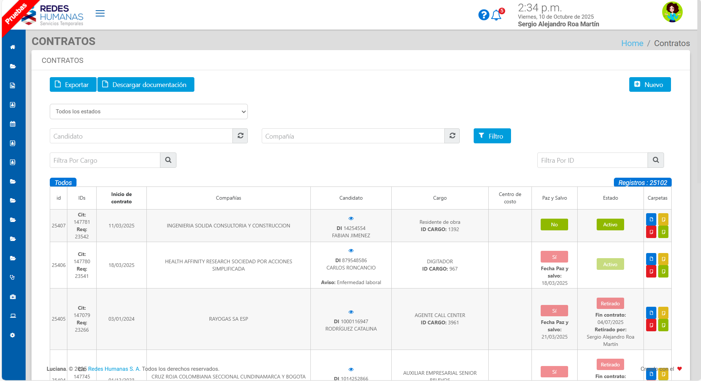
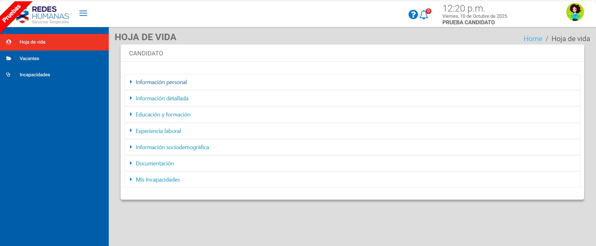

üíº Luciana ‚Äì Plataforma de Gesti√≥n de Recursos Humanos
üìñ Resumen y Contexto
Luciana fue una plataforma integral de contratación y recursos humanos con alcance multiusuario (B2C y B2B). Se utilizaba tanto por áreas internas (selección, médica, contabilidad, soporte) como por usuarios externos (candidatos y compañías aliadas). El sistema centralizaba la información de empleados, automatizaba procesos de contratación y generaba documentos, reportes y notificaciones.
Mi rol fue de desarrollador Full-stack, participando activamente en mantenimiento, desarrollo de nuevas funcionalidades y toma de decisiones técnicas. Además, asumí la coordinación técnica informal, apoyando a otros desarrolladores, revisando código y resolviendo incidencias críticas.
üë§ Rol y Contribuci√≥n
- Rol Principal: Desarrollador Full-stack (Backend y Frontend)
- Contribución Adicional: Coordinación técnica, revisión de código y soporte al equipo de desarrollo
üõ†Ô∏è Stack Tecnol√≥gico
- Backend: Lumen Laravel 5.4 (producción) / Lumen Laravel 11 (migración)
- Frontend: Angular v2 (legacy) / Angular 19 (migración parcial)
- Base de Datos: MySQL y SQL Server
- Infraestructura: Google Cloud Platform (GCP) e instancias locales
- Integraciones: APIs externas y Twilio (notificaciones WhatsApp)
üß≠ Arquitectura del sistema
El siguiente diagrama ilustra el flujo de datos principal y los componentes dentro de la plataforma Luciana.
graph TD
A[Frontend - Angular ] -->|HTTP REST| B[Backend - Lumen laravel]
B --> C[(MySQL / SQL Server)]
B --> D[Google Cloud Storage]
B --> E[APIs externas / Twilio]
üñ•Ô∏è Interfaces de Inicio de Sesi√≥n
| Portal de Candidatos | Portal de Empleados |
|---|---|
 |
 |
üöÄ Funcionalidades Principales Desarrolladas
- Portal de Autoservicio para Candidatos: Registro, postulación a ofertas, carga de documentos y gestión de incapacidades.
- Portal para Empresas Terceras: Consulta de información de empleados tercerizados.
- Integración Automática de Datos y Documentos: Sincronización entre portales internos y externos.
- Notificaciones Multicanal: Automatización de envíos por correo y WhatsApp.
- Generación Dinámica de Documentos: Contratos, anexos y carnés personalizados según empresa o cargo.
- Módulos de Salud Ocupacional: Gestión de incapacidades, casos médicos y exámenes ocupacionales.
- Reportes en Tiempo Real: Auditoría y control interno.
- Procesos Masivos: Carga y generación masiva de datos desde Excel.
üèÜ Logros T√©cnicos y Desaf√≠os
⚡ Optimización de Rendimiento
- Migré la lógica ineficiente de ApiHandler a consultas optimizadas con el ORM de Laravel.
→ Resultado: Reducción del tiempo de respuesta de 15 s a 2–3 s y del tamaño de los resultados de 10 MB a 1.2 MB.
→ Impacto: Estabilidad del servidor y habilitación del trabajo remoto sin interrupciones.
☁️ Arquitectura Híbrida de Almacenamiento
- Diseñé e implementé un sistema híbrido de almacenamiento (instancia + Google Cloud Storage), migrando 1 TB de archivos sin pérdida de datos.
→ Impacto: Reducción del 15–20 % en costos de infraestructura y aumento en escalabilidad y seguridad.
üß± Migraci√≥n de Frontend (Angular v2 ‚Üí v19)
- Planifiqué y comencé la reescritura completa del frontend. Logré establecer la arquitectura base y migrar con éxito varios módulos clave, demostrando la viabilidad del proyecto y los beneficios inmediatos en rendimiento y experiencia de desarrollo.
➡️ Ver detalles técnicos del proyecto de migración aquí
Nota: Aunque la migración completa fue pausada posteriormente debido a una re-priorización estratégica de la compañía, la fase inicial que lideré sirvió como una prueba de concepto robusta, sentando las bases técnicas y demostrando el camino a seguir para la futura modernización de la plataforma.
üí° Migraci√≥n de Backend (Lumen 5.4 ‚Üí 11)
- Desarrollé la prueba de concepto para validar la migración del backend, asegurando compatibilidad total con Angular 19.
⚙️ Módulos y Automatizaciones Destacadas
1. Onboarding y Gestión Documental (B2C)
- Diseño del portal de autoservicio para candidatos, desde registro hasta carga documental.
- Los documentos se reutilizaban automáticamente en distintos procesos, eliminando duplicidad.
- Creé la lógica de transferencia de datos y documentos entre operaciones, aumentando la eficiencia del equipo en 25 %.
üîÑ Flujo de Onboarding
flowchart LR
A[Registro de Candidato] --> B[Carga de Documentos]
B --> C[Validación de Datos]
C --> D[Verificación por Recursos Humanos]
D --> E[Generación de Contrato]
E --> F[Notificación al Candidato]
2. Eficiencia y Procesos Masivos
- Carga Masiva desde Excel: Registro automático de miles de candidatos por lote.
- Generación Masiva de Documentos: Descarga simultánea en PDF según filtros (empresa, cargo, tipo de documento).
3. Salud Ocupacional y Cumplimiento
- Módulo de Incapacidades: Formulario dinámico con gestión de estados, validaciones y notificaciones automáticas.
- Módulo de Exámenes Médicos: Presupuestos, agendas, plantillas automáticas y notificaciones por correo/WhatsApp.
- Casos Médicos Críticos: Registro de incidentes HSE con trazabilidad completa.
ü©∫ Flujo del M√≥dulo de Incapacidades
flowchart TD
subgraph Etapa_1 [Carga y Validación]
A[Empleado carga incapacidad] --> B[Validación inicial automática]
end
subgraph Etapa_2 [Aprobación Inicial]
B --> C{Aprobación inicial}
C -->|Sí| D[Notificación de trámite al empleado]
C -->|No| E[Notificación de rechazo al empleado]
end
subgraph Etapa_3 [Aprobación Final]
D --> F{Aprobación}
F -->|Sí| G[Notificación de aprobación y pago al empleado]
F -->|No| H[Notificación de rechazo al empleado]
end
4. Control Interno y Auditoría
- Reportes Dinámicos: Reemplazo del BI semanal por reportes en tiempo real.
- Sistemas de Ticketing Interno:: Implementé dos sistemas de gestión de solicitudes: uno para requerimientos de desarrollo (bugs, features) y otro para soporte de TI (impresoras, contraseñas), mejorando la organización del trabajo.
- Módulo de Inventario de Activos: Diseñé un sistema para registrar y controlar los equipos de la compañía (seriales, historial de usuarios, fechas), optimizando la planificación de compras.
üìà Impacto Cuantificable
- Reducción de Costos: Eliminación de proveedores externos para gestión médica.
- Ahorro de Tiempo: Reducción del 20–50 % en tareas operativas clave.
- Estabilidad Operacional: Eliminación de saturaciones del servidor.
- Control Financiero: Seguimiento automatizado de costos por laboratorio médico.
üåê Vista General del Sistema
| Módulo Contratos | Programación exámenes médicos |
|---|---|
|  |  |
| Portal de Candidatos | Incapacidades |
|---|---|
|  |  |
üîç Reflexi√≥n Personal
Luciana representó un reto integral: un sistema extenso, con múltiples dependencias y una base de código heredada. A través de mi participación, pude mejorar la estabilidad, escalabilidad y usabilidad del sistema, liderando la evolución técnica y consolidando mi experiencia en arquitectura híbrida, optimización de rendimiento y liderazgo técnico.